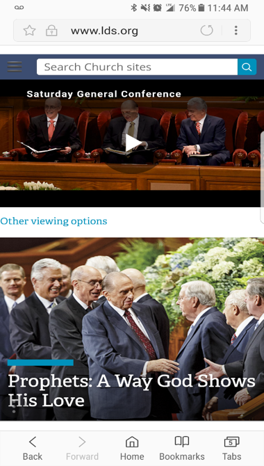
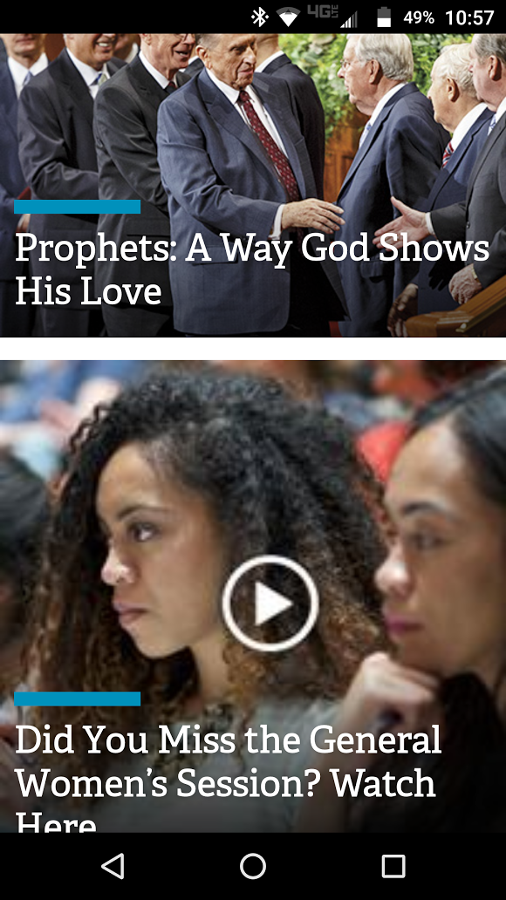
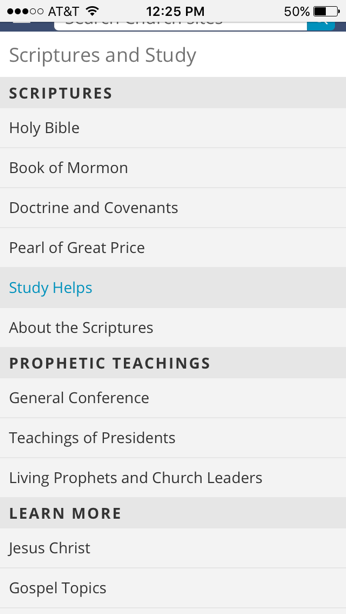

Design - Analysis Assessment
LDS.org
Design Principles
Proximity — Levi Stum

LDS.org provides a good example of proximity because whether you’re viewing it vertically or horizontally spaces out articles and pictures with an adequate amount of white space. It makes them easy to view and read.
Alignment — Will Orchard
In Lds.org we see alignment used very well. In the mobile version they simplify the website to make it very clean and neat. The titles and menus they do have are all aligned to the left making it easier for the user to read and use. They also push “watch general conference” a little more to the center with a play button in the middle to help distinguish it better.
Repetition — Alex Matheson
LDS.org is beautiful example of repetition. As you see in the screenshot, the designer has created a reacquiring layout for each link using the exact; font, aesthetic design (the blue bar), and picture size. This is important because it keeps the page organized and accessible to the user.
Contrast — Joseph Walker
LDS.org demonstrates contrast on multiple levels. The color scheme of the website allows site users to read information well. The contrasts in size of the content allows users to quickly find what they are looking for and keeps everything organized. Even on videos and images the words stand out clear and distinct.
Typography — Brad Clegg
It was hard finding a photo for typography on LDS.org. There was plenty of it but not good examples. From this image you can see that after you click on the menu button there comes a list of words. Through the use of typography we can see there are different sections such as scriptures. We know this because the font is bolded and a little bigger. We also can see that they are links because when you hover over them the words change color. This is important in typography to organize a page with different font sizes and changing the color on links.
Site Purpose Statement
To provide a source for doctrine, resources, news, and infromation about the Church of Jesus Christ of Latter-Day Saints.
Target Audience
- Age: 15-65
- Occupation: All ocupations
- Income: All incomes
- Other: Children of God seeking Christ
Persona
- Name: Molly Mormon

- Occupation: Homemaker
- Primary Device: iPhone 6s
- Quote: "Sorry, my son wont be able to come to soccer practice tonight. We are having family night."